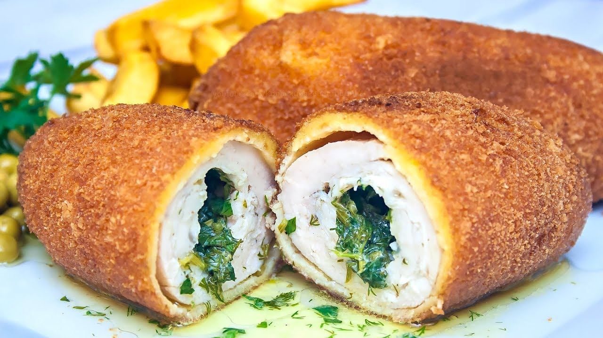

Котлети по-київськи - класичний рецепт відомої української страви

Ці ніжні і соковиті котлети відомі у всьому світі.
Разом з борщем і варениками котлета по-київськи - це одне з найвідоміших у світі страв української кухні. Ніжне мʼясо в хрусткій паніровці можна
знайти в меню багатьох дорогих ресторанів планети. Котлета по-київськи по праву є гордістю України. На відмінну від звичних котлет, це блюдо готується з цільного
шматка курки, а не фаршу. Головна родзинка київської котлети - рідка начинка з ароматним маслом.
Класична котлета по-київськи
- Вершкове масло - 140 г.
- Курка - 1,2 кг.
- Петрушка - 20 г.
- Сіль - 0,5 чайної ложки.
- Куряче яйце - 2 шт.
- Молоко - 100 мл.
- пшеничне борошно - 60 г.
- Панірувальні сухарі - 140 г.
- Вершкове масло - 50 г.
- Рослинна олія - 300 мл.
Інструкція з приготування
- Курку без шкіри обробити на два шматки філе грудки разом з плечовою кісткою на ніжці. Філе покласти внутрішньою стороною вгору, надрізати від середини
уздовж в обидві сторони, покласти половинки так, щоб потім помістилась начинка, відбити молотком. Акуратно видалити білі сухожилля.
- У мисці змішати нарізану петрушку, розтоплене вершкове масло і сіль до однорідної маси. Розділити суміш на дві частини і поставити в морозилку
на 5 хвилин. Потім покласти начинку в філе, щільно загорнути і знову прибрати на 5 хвилин в морозилку
- Окремо в мисці збити яйця з молоком. Котлети обваляти в борошні, потім в яєчній суміші, в панірувальних сухарях, потім в суміші, потім знову в паніровці.
У ємність для фритюру налити масло і нагріти до 200 градусів. Розігріти до 200 градусів духовку. Підсмажити котлети у фритюрі до золотистої скоринки (
приблизно 5 хвилин), потім довести до готовності в духовці протягом 10 хвилин. Перед подачею викласти на серветку, щоб увібрати жир.
Смачного!